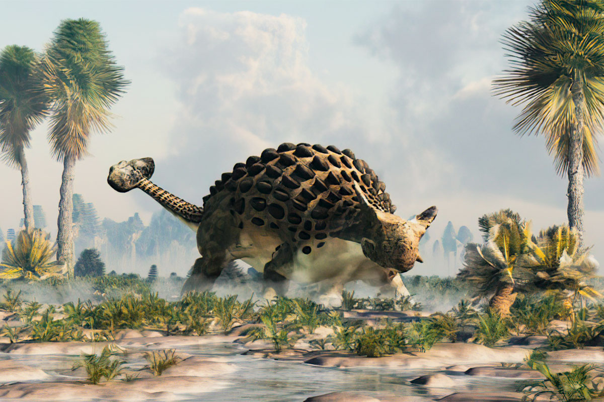

Анкилозавры
Анкилозавры, или панцирные динозавры (лат. Ankylosauria, от названия рода Ankylosaurus) — инфраотряд вымерших динозавров отряда птицетазовых, характерной особенностью которых являются костные образования на туловище.
Все представители данной группы динозавров были четвероногими. Обладали широким туловищем, короткими и массивными конечностями, сравнительно небольшим черепом. Длина тела варьировалась от 2 до 9 метров, масса от 300 кг до 6 тонн. По образу жизни анкилозавров рассматривают как наземных животных, предпочитавших влажные среды обитания с богатой растительностью, такие как районы рек и озёр, прибрежные равнины. В строении анкилозавров проявляются морфологические признаки строения тела, которые в комплексе могут указывать на их тесную связи с водой. Простая зубная система говорит о питании анкилозавров мягкой растительностью. Вероятно могли также питаться плодовыми телами и маленькими беспозвоночными, хотя растительность, несомненно, составляла значительную часть рациона.
Находки окаменелостей дают возможность предполагать, что анкилозавры произошли от четвероногих предков. Самые ранние ископаемые остатки анкилозавров известны из верхней юры и достигли своего пика в меловом периоде, расселившись по всем континентам. В России остатки обнаружены за Уралом. Как и все птицетазовые динозавры, вымерли в конце мезозойской эры (мел-палеогеновое вымирание).
Клада анкилозавров была впервые предложена Генри Фэйрфилдом Осборном в 1923 году для обширной группы родов, объединённых общим наличие костных пластин и шипов. По степени выраженности определённых морфологических особенностей анкилозавры делятся на два основных семейства — нодозавриды и анкилозавриды. Основные различия заключаются в форме и пропорциях черепа, характере костных щитков на поверхности черепа, величине зубов. В общей сложности описано около 57 видов анкилозавров, относящихся к 50 родам.
Благодаря своим запоминающимся внешним отличиям, анкилозавры являются частью популярной культуры всего света. Гилеозавр был одним из первых динозавров, для которого была предпринята попытка полноразмерной реконструкции в Хрустальном дворце Лондона в 1854 году. Известности анкилозаврам очень поспособствовала и реконструкция рода анкилозавр в натуральную величину, фигурировавшая на Всемирной выставке 1964 года в Нью-Йорке.
Классификация анкилозавров
- Анкилозавриды
- Нодозавриды